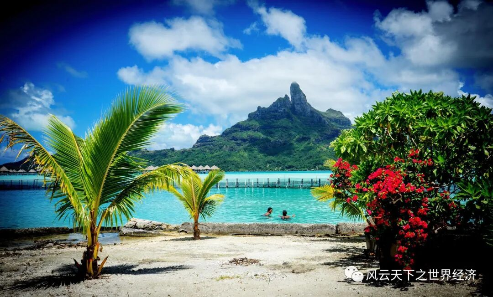
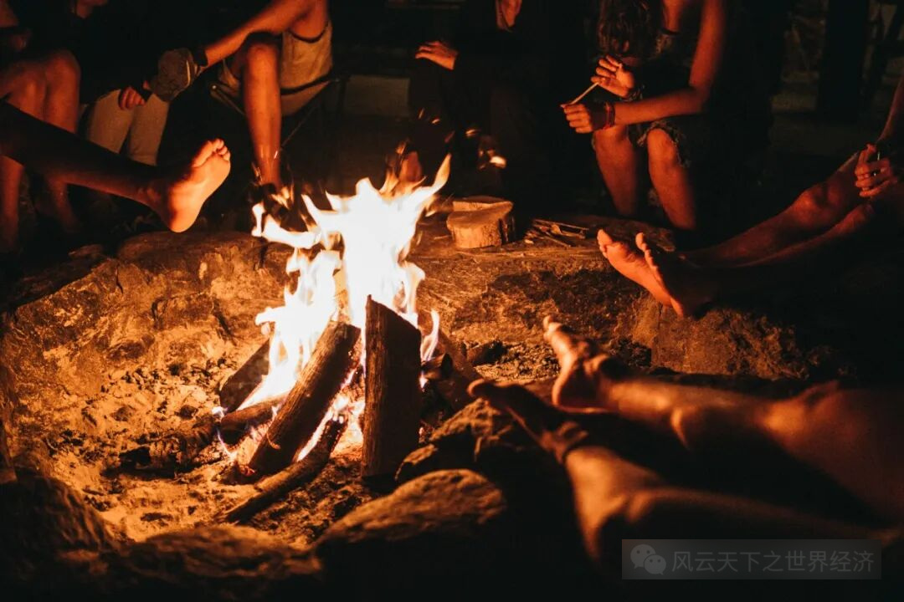
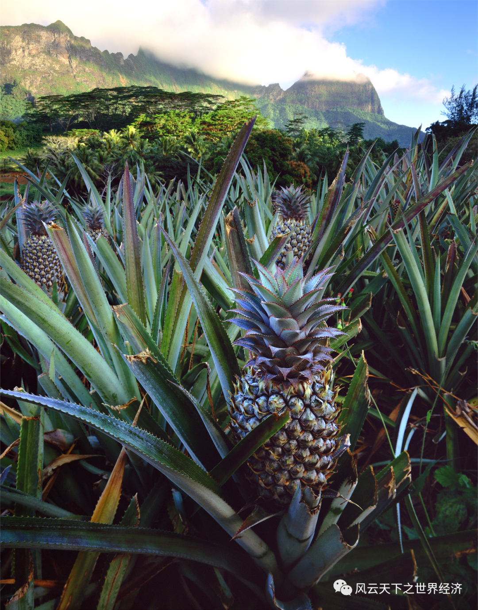
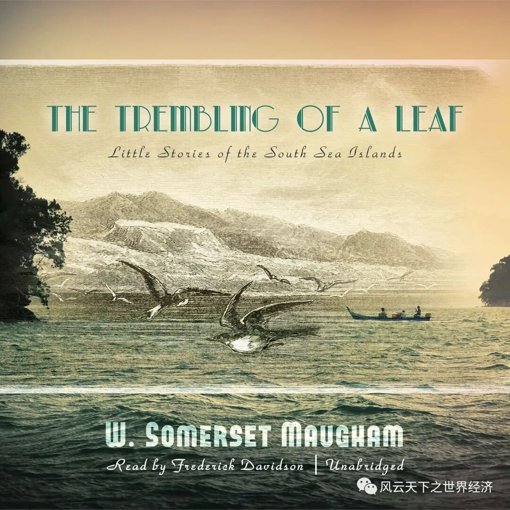

“Find them! All those new lands, new villages...It was the water that connected them all.”
迪士尼的《海洋奇缘》，为我们铺开了波利尼西亚人的岛屿生活图景：椰树林，环礁湖，独木舟与浩瀚无垠的海洋……假如18世纪的库克船长没有来过这里，南太平洋上星罗棋布的岛屿或许会一直保留农业革命前的样子，最大程度地满足我们对于狩猎采集者日常生活的诗意想象。在这样的世界里，热爱冒险，黝黑而充满活力的Moana，会是杰出的青年标杆。

波利尼西亚风景
我们不妨大胆设想，假如冰期结束伴随着更高的温度以及大幅上升的海平面，或许我们引以为傲的农业革命将不复存在。而以捕鱼为生的狩猎生活成为了人们的生活的主线——谁能在海洋中更高效地获取食物资源，谁就抢占了“海洋革命”发展的先机。伴随着捕捞技术的革新，采集者们不再为食物的获取而发愁。同时多元、自由的文化，在不断探索新岛屿的过程中萌生，并发展壮大。
最初，岛屿生活的日常由造船，织网，渔猎组成。
假如爱丽丝钻进树洞，来到海洋革命发生之前的平行世界，她看到的或许是这样一番景象：小岛的男人们裹着帕里奥，赤着脚，健壮的身体被阳光晒成深褐色，几个人正合力敲打着独木舟的雏形；在一簇簇的茅屋前，女孩子们正在跟随阿嫲学习棕榈树皮的编织技艺，头顶的白色花环纯洁无暇，手腕上、脖颈上、贝壳撞击的声响叮叮当当；更小一点的小男孩刚刚结束了上午的捕捞课程，三两下就将手中的帕里奥绕成了一条泳裤，笑着、奔跑着、大叫着奔入清凉的海水。道路两旁，满是高大的椰子树和芬芳浓郁的香子兰，芒果树上结满了红、黄、紫色的果实，在阳光的照射下显得娇艳欲滴。
夜晚，青年男女在火光摇曳下对视着跳起Haka舞；一群孩子们在篝火边，饶有兴致地听老人讲述着传说中远洋航行的故事，渐渐地，眼皮不住耷拉下去，睡着了。火光在他们的睫毛上一闪一闪。渐渐只剩海浪声、树叶摩挲声、几声犬吠。
但是，饱食与饥饿的日子交替而至。

跳跃的篝火宁静的夜
有时渔猎受到上天的眷顾，金枪鱼、鳐鱼、壳类便一应俱全；运气不好时，岛民只能用果实和种下的芋头山药充饥，偶尔杀几只家养的牲畜。岛民艾比带着两条小小的鱼回家迎接孩子们闪亮亮的眼睛时，总是面露愁色。
被饥饿感拽醒的又一天夜里，艾比开始思考，有没有可能制造出更强大的捕鱼器，打磨出更坚实的船只，从而摆脱现在半饥半饱的生活。数个不寐的夜晚后，艾比终于成功改进了的粗制渔网，金属扣环在篝火的照亮下闪着亮光。
渐渐地，艾比家里不仅不缺粮食，还总能有多的分出去。后来，许多岛民开始用木块和艾比交换食物，更机灵的则模仿着做了一个精致的渔网。除非极端天气降临，岛民们很少再担心饿肚子的事情——艾比将打渔的事情交由给孩子们，自己专心做起了改进船只的工作；些许家中宽裕的岛民开始专职售卖精致渔网、或是从事星象和天文的研究工作。
岛上的人口越来越多了。
虽然食物依旧足够支撑，但土地在人口与家庭增长后明显不够分了。那些听故事的孩子们也已经长大成了健壮的年轻人，对于跨越海洋去寻觅新住处的想法，在他们的脑海里愈演愈烈。
有时候，出海的年轻人再没有了音讯。
或许他们到达了另一个岛屿，或许葬身大海。
终于有一天，一个熟悉的脸庞回到了岛上，孩子们簇拥着围上去，摸着他身上陌生触感的粗布，问他手里的贝壳珠为何物。他说，他如今居住的岛屿上，有很多这样闪闪发亮的珍珠。从这天起，跨岛的贸易、迁徙开始缓慢地发展起来，捕捞与船只建造技术进步使得岛民拓展了出行海域；盐的使用延长了食物的使用时间、各类矿藏的开发推进了货币、兵器等的建造与发明。
海洋革命的背后，仍然是人类有东西吃、有地方住的基本需求。至于小岛上为什么没有农业革命的发生，与地理环境的原因紧密相关。
一方面，岛屿的环境确实不适合农业种植。淡水的缺乏，山地土壤的贫瘠和海水盐碱化的叠加，让农业成为一个耗费资源又劳心劳力的选择。而且在岛屿人口逐渐增加的背景下，“刀耕火种”技术不断消耗土壤，给种植带来巨大的负荷。数年耕作后，耕地养分大量流失而变得贫瘠。被迫地，人类只将农业生产的作物视为食物的补充来源，而非主要来源。

塔希提岛上种植的农作物
另一方面，当小岛资源不足时，人类还可以选择继续迁徙。在资源尚丰富之时，富集的食物资源意味着社会等级制度的发展——当部分人口可以不从事捕捞活动时，阶级便开始分化。而这种分化在后续资源不足的情况下，分配的不公将进一步导致阶级鸿沟的加深。尤其是那些不属于强势宗族的年轻一代，总想找到属于自身的领土，不断探寻新的岛屿，哪怕跨越重洋，冒着赴死的风险。
同时，海洋革命下的人类文明，对于自由的向往比农业革命下定居的人们更为强烈。其中，商人、探险家、研究捕捞技术、星象与洋流的科学家们在海洋革命的过程中起到了非常重要的作用，他们对资源、权力、与未知的渴求，继续推动着海洋革命的进行。在这样的想象下，或许部分的文明会发展出与希腊文化相似的文明：自由多元而包罗万象，政治上没有统一的政体，学科上百花齐放，贸易繁荣昌盛。
当然，资源匮乏的岛屿可能是另一番景象。
他们更加崇尚物竞天择的文化——勇士伦理，即勇敢、暴力、复仇和荣誉。缺乏资源的岛民，造出了结实的船只后不选择经商，而是做起海盗的勾当：就像8世纪的维京人一样，烧杀抢掠，无恶不作。这些地区硝烟不断，家族斗争、武装冲突就和捕鱼一样稀松平常，流血杀戮不过是眨眼之间。海盗的势力慢慢渗入了某些族群，对几个到几十个不等的岛屿进行暴力统治——但通常，这样的事情不会波及到非常远的海域。岛礁的管理不像陆地的土地管理一样易于持续，农业革命下伴随而来的集权统治，也不复存在。
只是，海洋革命带来的生产效率的提高，比起农业革命要小得多得多——在本质上，人类仍然没有从食物采集者变成食物生产者。尽管零星区域冒出了驯化作物的火花，但不成火候，无法称之为革命。
不萌发农业革命，也未必是一件坏事。
当人类的身体不再禁锢在一抔又一抔黄土上，思想上同时得到了解放，无垠的海域则代表着更多的可能性。正如法国经济学家雅克·阿塔利所说：“海洋使人类懂得欣赏自由的崇高，沉醉在自由之中，也懂得失去自由是一场悲剧。”
岛屿生活是否真有我们想象的如此淳朴和美好，我们不得而知。只是在自然资源有限的前提下，资源争夺依然会存在，而不会因为没有发生大规模的农业革命而终止。当海洋革命结束——即捕捞技术的飞跃完成、岛屿都被人类探索殆尽，人类不再发生大规模的迁徙时，或许仍然会落入“变相的”马尔萨斯的陷阱：人口超出了海洋资源可以捕捞的极限，则又会面临一次灭顶之灾。
“人一旦发育出灵魂，他便失去了失乐园。”
这是毛姆在短篇小说集《叶之震颤》发出的一声叹息：人类在不断追求进步，成功与荣华富贵的过程中，逐渐遗忘了美好而原始的生活的模样。在《爱德华·巴纳德的堕落》一文里，不拼搏的人更是被贴上了堕落的标签——主角爱德华出生在繁华的芝加哥，他原是为了“闯出一番事业“来到南太平洋的塔西提岛，但却逐渐爱上了岛上日出而作，日落而息的淳朴生活，放弃再回故乡。这一切行径都被他的昔日好友贝特曼视为滑稽、堕落、不可理喻。

威廉·萨默塞特·毛姆的《叶之震颤》
或许我们作为经历过农业革命的贝特曼，作为食物生产者，无法再去想象食物采集者安于现状的乐趣。只是有那么一种可能性：没有发展出农业革命的世界，或许会有更轻松的生活，更开放的思想，和更多元的文明。
当然，这一切的前提都是“假如”，农业革命幸存者的帆影最终还是会在某条海岸线上升起……
- END -